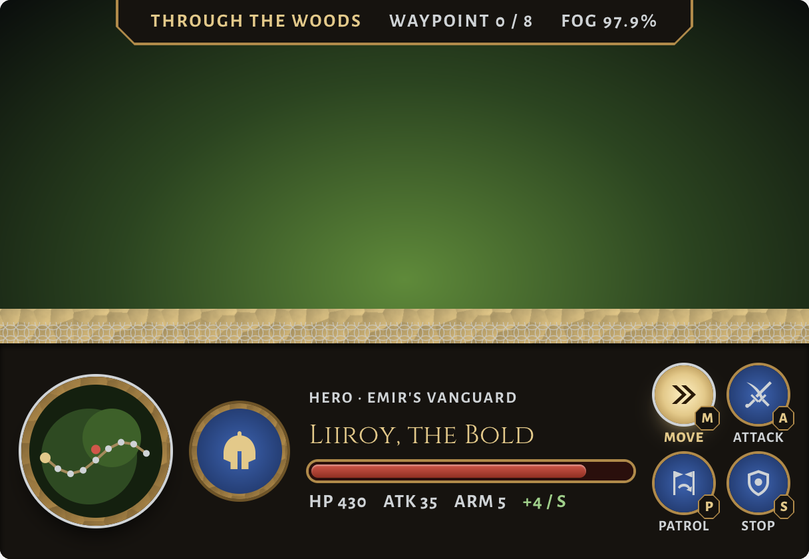
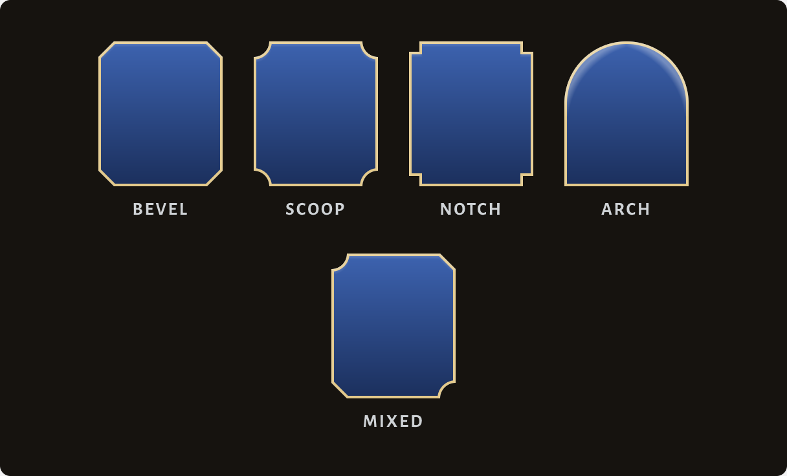
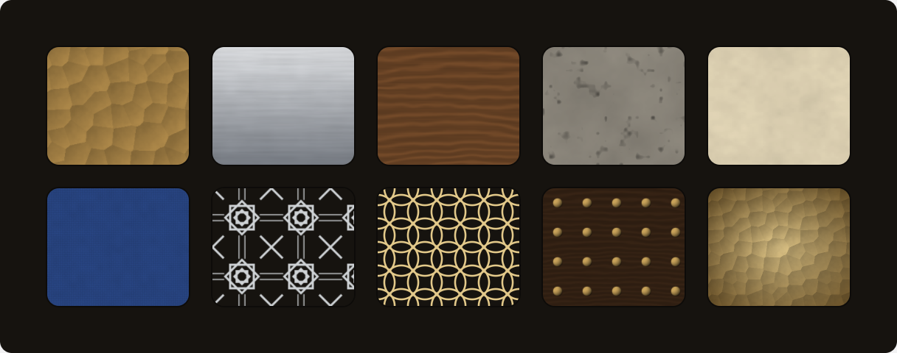
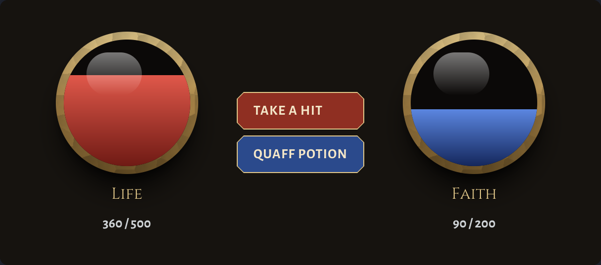
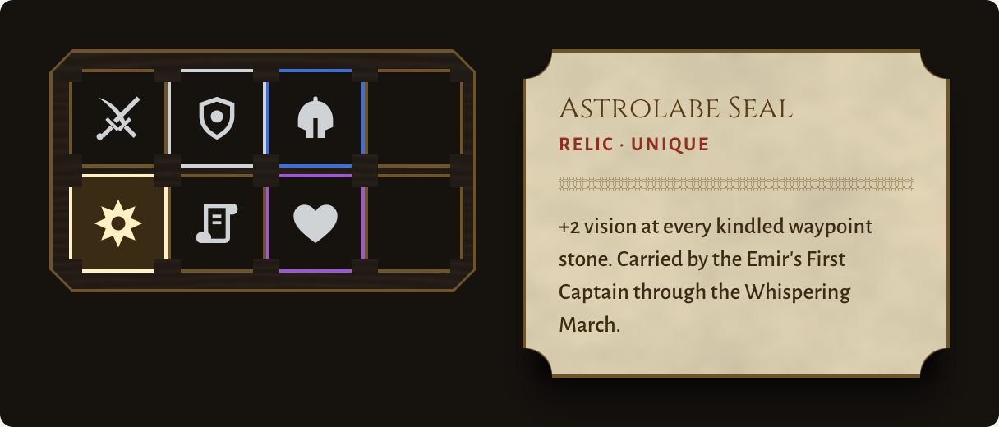
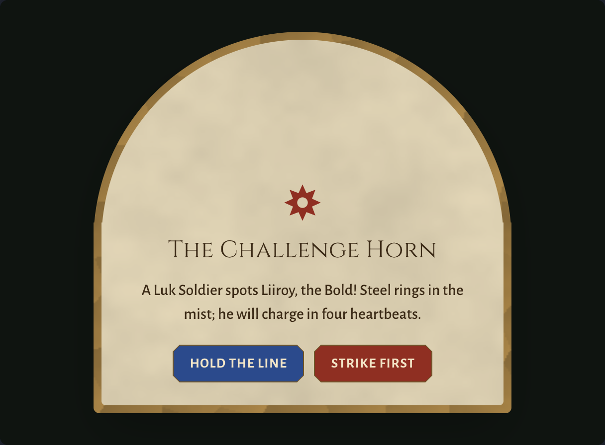

Game UI
Skeuomorphic HUDs for games: ornate corner shapes, textured materials, orb gauges and inventories, embeddable in a game's own GL context.
Games ask for a different register than tools: bevelled metal, carved frames, textured grounds, glowing orbs. vinland-ui draws them with the same one-instance-per-box renderer, so a full RTS console costs a few hundred instances and one draw call per texture, and it can be embedded in a game that owns its own window and GL context (vinland:vui/gl).
What the renderer adds for games
| Class | Effect |
|---|---|
| corner-bevel / corner-scoop / corner-notch | cut, concave or stepped corners; size comes from rounded-*; per corner with corner-tl-*, corner-t-*, ... |
| corner-t-arch rounded-t-[h] | pointed arch over the top edge, h is the arch height; half the width gives a round arch |
| bg-tex-<name> | textured fill, multiplied with the background colour or gradient |
| bg-tile-<px> | tile the texture every <px> logical pixels (default: stretch over the box) |
| materials.register(&ctx) | procedural tileable textures: hammered, brushed, grain, stone, parchment, weave; masks khatam, interlace, studs |
| ui.image_register_external(ctx, handle, w, h) | show a texture the game owns (minimap, render target) inside the layout |
| ui.pointer_over_ui(ctx) | true when the mouse is over UI: route clicks to the world only when it is false |
An RTS command console
The band of an inlaid brass basin: hammered brass rim, bitumen-black field, silver interlace frieze, roundels for the map and the portrait, and command medallions. Click a medallion to arm it: the armed one fills with gold inlay.

if ui.div("relative h-[420px] w-full overflow-hidden bg-[#0a0d0c]") {
// battlefield stand-in
ui.el("absolute inset-0 bg-radial from-[#5f8a3a] via-[#2b4420] to-[#0a0d0c]")
// top cartouche
if ui.div("absolute top-0 left-1/2 -translate-x-1/2 flex items-center gap-5 whitespace-nowrap rounded-b-xl corner-b-bevel bg-[#16130f] px-6 py-1.5 font-game text-sm font-bold uppercase tracking-widest text-[#cfd3d6] ring-2 ring-[#b08a4a]") {
ui.text("Through the Woods", "text-[#e3c98a]")
ui.text("Waypoint 0 / 8", "tabular-nums")
ui.text("Fog 97.9%", "tabular-nums")
}
// console band
if ui.div("absolute inset-x-0 bottom-0 h-[188px] bg-linear-to-b from-[#e3c98a] via-[#b08a4a] to-[#6e5428] bg-tex-hammered bg-tile-96 pt-2.5") {
ui.el("absolute inset-x-0 top-[10px] h-4 bg-[#cfd3d6]/70 bg-tex-interlace bg-tile-16")
if ui.div("mt-4 flex h-[162px] items-center gap-4 bg-[#16130f] px-4 inset-shadow-sm inset-shadow-black/80") {
// minimap roundel
if ui.div("size-[112px] shrink-0 rounded-full bg-[#b08a4a] bg-tex-hammered p-1.5 ring-2 ring-[#cfd3d6] shadow-lg shadow-black/60") {
ui.canvas("size-full rounded-full bg-[#14200f] overflow-hidden", minimap_demo)
}
// portrait roundel + vitals
if ui.div("flex min-w-0 grow items-center gap-4") {
if ui.div("size-[72px] shrink-0 rounded-full bg-[#b08a4a] bg-tex-hammered p-1 ring-2 ring-[#6e5428]") {
if ui.div("flex size-full items-center justify-center rounded-full bg-radial from-[#3d63b0] to-[#1b2f5c]") {
ui.icon(GI.helm, "size-9 text-[#e3c98a]")
}
}
if ui.div("flex min-w-0 grow flex-col gap-1.5") {
ui.text("Hero · Emir's Vanguard", "truncate font-game text-xs font-bold uppercase tracking-widest text-[#cfd3d6]")
ui.text("Liiroy, the Bold", "truncate font-display text-xl font-bold text-[#e3c98a]")
if ui.div("h-3.5 rounded-full bg-[#2a0f0c] p-0.5 ring-2 ring-[#b08a4a]") {
ui.el("h-full w-[86%] rounded-full bg-linear-to-b from-[#d0574a] to-[#8f2f22] inset-shadow-xs inset-shadow-white/40")
}
if ui.div("flex gap-3 font-game text-sm font-bold uppercase tracking-wider whitespace-nowrap text-[#cfd3d6]") {
ui.text("HP 430", "tabular-nums")
ui.text("ATK 35", "tabular-nums")
ui.text("ARM 5", "tabular-nums")
ui.text("+4 / s", "tabular-nums text-[#9fcf8a]")
}
}
}
// command medallions
if ui.div("grid shrink-0 grid-cols-2 gap-x-3 gap-y-1") {
CMDS := [4]string{"Move", "Attack", "Patrol", "Stop"}
KEYS := [4]string{"M", "A", "P", "S"}
ics := [4]ui.Icon{GI.move, GI.attack, GI.patrol, GI.stop}
for name, i in CMDS {
ui.push_id(i)
armed := G.armed == i
if ui.button_box("group flex flex-col items-center gap-0.5") {
if ui.div(armed ? "relative flex size-11 items-center justify-center rounded-full bg-radial from-[#fff1c4] via-[#e3c98a] to-[#9b7433] ring-2 ring-[#cfd3d6] shadow-lg shadow-[#e3c98a]/40" : "relative flex size-11 items-center justify-center rounded-full bg-radial from-[#3d63b0] to-[#1b2f5c] ring-2 ring-[#b08a4a] transition group-hover:ring-[#e3c98a]") {
ui.icon(ics[i], armed ? "size-6 text-[#2a1a08]" : "size-6 text-[#cfd3d6]")
ui.text(KEYS[i], "absolute -right-1 -bottom-1 rounded-sm corner-bevel bg-[#16130f] px-1 font-game text-[11px] font-extrabold text-[#e3c98a] ring-1 ring-[#b08a4a]")
}
ui.text(name, armed ? "font-game text-[11px] font-extrabold uppercase tracking-wider text-[#e3c98a]" : "font-game text-[11px] font-bold uppercase tracking-wider text-[#cfd3d6]")
if ui.clicked() {
G.armed = i
}
}
ui.pop_id()
}
}
}
}
}Corner shapes
corner-* changes the geometry of a corner and rounded-* its size. Borders, rings, inset shadows and hard shadows follow the shape. Arches take the height of the arch.

if ui.div("flex w-full flex-wrap items-end justify-center gap-6") {
SHAPES := [5]string{
"corner-bevel rounded-xl",
"corner-scoop rounded-xl",
"corner-notch rounded-lg",
"corner-t-arch rounded-t-[64px]",
"corner-tl-scoop corner-br-scoop corner-tr-bevel corner-bl-bevel rounded-xl",
}
LABELS := [5]string{"bevel", "scoop", "notch", "arch", "mixed"}
for cls, i in SHAPES {
ui.push_id(i)
if ui.div("flex flex-col items-center gap-2") {
ui.el(ui.cx("h-28 w-24 border-2 border-[#e3c98a] bg-linear-to-b from-[#3d63b0] to-[#1b2f5c] inset-shadow-sm inset-shadow-white/30", cls))
ui.text(LABELS[i], "font-game text-sm font-bold uppercase tracking-widest text-[#cfd3d6]")
}
ui.pop_id()
}
}Materials
Relief textures are light grey and multiply the background colour or gradient, so one texture serves every metal, wood and stone. Mask textures carry the pattern in alpha: tint them with a colour to inlay a pattern on any ground.

if ui.div("grid w-full grid-cols-5 gap-4") {
ui.el("h-20 rounded-lg bg-[#b08a4a] bg-tex-hammered bg-tile-96 ring-1 ring-black/40")
ui.el("h-20 rounded-lg bg-linear-to-b from-[#e7e9ec] to-[#7d828a] bg-tex-brushed ring-1 ring-black/40")
ui.el("h-20 rounded-lg bg-[#7a4e2b] bg-tex-grain bg-tile-128 ring-1 ring-black/40")
ui.el("h-20 rounded-lg bg-[#9c968a] bg-tex-stone bg-tile-128 ring-1 ring-black/40")
ui.el("h-20 rounded-lg bg-[#e9dcbc] bg-tex-parchment ring-1 ring-black/40")
ui.el("h-20 rounded-lg bg-[#2b4a8c] bg-tex-weave bg-tile-48 ring-1 ring-black/40")
if ui.div("h-20 rounded-lg bg-[#16130f] ring-1 ring-black/40") {
ui.el("size-full rounded-lg bg-[#cfd3d6] bg-tex-khatam bg-tile-40")
}
if ui.div("h-20 rounded-lg bg-[#16130f] ring-1 ring-black/40") {
ui.el("size-full rounded-lg bg-[#e3c98a] bg-tex-interlace bg-tile-32")
}
if ui.div("h-20 rounded-lg bg-[#3b2616] bg-tex-grain ring-1 ring-black/40") {
ui.el("size-full rounded-lg bg-[#c9a35a] bg-tex-studs bg-tile-20")
}
ui.el("h-20 rounded-lg bg-radial from-[#e3c98a] to-[#6e5428] bg-tex-hammered bg-tile-64 ring-1 ring-black/40")
}Orb gauges
A health orb is a round frame with a clipped liquid level, a glass highlight on top and a brass ring. The level is a percentage height, so it animates with transition-all.

if ui.div("flex items-center gap-10") {
orb(f32(G.hp) / 500, "from-[#e0584a] to-[#6f1a14]", "Life", fmt.tprintf("%d / 500", G.hp))
if ui.div("flex flex-col gap-2") {
if ui.button("Take a hit", "rounded-md corner-bevel bg-[#8f2f22] px-4 py-2 font-game text-sm font-bold uppercase tracking-wider text-[#f3e6c8] ring-1 ring-[#e3c98a] hover:bg-[#a63a2c]") {
G.hp = max(25, G.hp - 90)
}
if ui.button("Quaff potion", "rounded-md corner-bevel bg-[#2b4a8c] px-4 py-2 font-game text-sm font-bold uppercase tracking-wider text-[#f3e6c8] ring-1 ring-[#e3c98a] hover:bg-[#355aa8]") {
G.hp = min(500, G.hp + 150)
G.mana = min(200, G.mana + 40)
}
}
orb(f32(G.mana) / 200, "from-[#5b86e0] to-[#14275c]", "Faith", fmt.tprintf("%d / 200", G.mana))
}Inventory and tooltips
Notched slots with rarity rims, a selected slot lit in gold, and a parchment tooltip with scooped corners.

if ui.div("flex items-start gap-8") {
if ui.div("grid grid-cols-4 gap-2 rounded-xl corner-bevel bg-[#2a221b] bg-tex-grain p-3 ring-2 ring-[#6e5428]") {
RIMS := [8]string{"ring-[#6e5428]", "ring-[#cfd3d6]", "ring-[#3d6fd6]", "ring-[#6e5428]", "ring-[#e3c98a]", "ring-[#6e5428]", "ring-[#9b59d0]", "ring-[#6e5428]"}
ITEMS := [8]ui.Icon{GI.attack, GI.stop, GI.helm, 0, GI.khatam, GI.scroll, GI.heart, 0}
for rim, i in RIMS {
ui.push_id(i)
sel := G.slot == i
if ui.button_box(ui.cx("flex size-14 items-center justify-center rounded-md corner-notch bg-[#16130f] inset-shadow-sm inset-shadow-black ring-2", sel ? "ring-[#fff1c4] bg-[#3a2c14]" : rim)) {
if ITEMS[i] != 0 {
ui.icon(ITEMS[i], sel ? "size-8 text-[#fff1c4]" : "size-8 text-[#cfd3d6]")
}
if ui.clicked() {
G.slot = i
}
}
ui.pop_id()
}
}
if ui.div("w-64 rounded-2xl corner-scoop bg-[#e9dcbc] bg-tex-parchment p-5 ring-2 ring-[#6e5428] shadow-xl shadow-black/60") {
ui.text("Astrolabe Seal", "font-display text-lg font-bold text-[#5a3a12]")
ui.text("Relic · Unique", "font-game text-xs font-bold uppercase tracking-widest text-[#8f2f22]")
ui.el("my-3 h-2 bg-[#6e5428]/60 bg-tex-interlace bg-tile-8")
ui.text("+2 vision at every kindled waypoint stone. Carried by the Emir's First Captain through the Whispering March.", "font-game text-sm/5 font-medium text-[#3b2a16]")
}
}Dialogue under an arch
A pointed arch, a parchment field and an inscriptional face carry the narrative moments; the controls inside stay standard buttons.

if ui.div("w-[420px] rounded-t-[290px] corner-t-arch bg-[#b08a4a] bg-tex-hammered p-2 pb-2 rounded-b-lg shadow-2xl shadow-black") {
if ui.div("flex flex-col items-center gap-3 rounded-t-[282px] corner-t-arch rounded-b-md bg-[#e9dcbc] bg-tex-parchment px-10 pt-36 pb-6") {
ui.icon(GI.khatam, "size-10 text-[#8f2f22]")
ui.text("The Challenge Horn", "font-display text-2xl font-bold text-[#3b2a16]")
ui.text("A Luk Soldier spots Liiroy, the Bold! Steel rings in the mist; he will charge in four heartbeats.", "text-center font-game text-base/6 font-medium text-[#3b2a16]")
if ui.div("mt-2 flex gap-3") {
ui.button("Hold the line", "rounded-md corner-bevel bg-[#2b4a8c] px-4 py-2 font-game text-sm font-bold uppercase tracking-wider text-[#f3e6c8] ring-1 ring-[#6e5428] hover:bg-[#355aa8]")
ui.button("Strike first", "rounded-md corner-bevel bg-[#8f2f22] px-4 py-2 font-game text-sm font-bold uppercase tracking-wider text-[#f3e6c8] ring-1 ring-[#6e5428] hover:bg-[#a63a2c]")
}
}
}Embedding in a game
When a game owns the window, vinland:vui/raylib bridges it: sample input, build the HUD, and render it over the finished world. It draws into the bound framebuffer without clearing it and restores the GL state it touched. Other GL hosts (GLFW, SDL_GL) use vinland:vui/gl directly.
import ui "vinland:vui"
import vrl "vinland:vui/raylib"
host: vrl.Host
vrl.init(&host, &ctx) // after rl.InitWindow
minimap := vrl.texture_image(&host, minimap_tex)
for !rl.WindowShouldClose() {
if !vrl.pointer_over_ui(&host) { handle_world_clicks() }
update_world(); update_camera()
vrl.begin(&host, vrl.input()) // after the camera: labels never lag
draw_hud() // ui.div(...), ui.image(minimap, ...)
vrl.end(&host)
rl.BeginDrawing()
draw_world()
vrl.render(&host) // flushes rlgl, one draw per texture batch
rl.EndDrawing()
}A game that renders with SDL3 GPU (Metal or Vulkan) embeds vinland:vui/sdlgpu instead: the HUD is recorded into the game's own command buffer and drawn inside its render pass, with no second device or swapchain. prepare uploads instances, glyphs and images before any render pass begins; draw runs inside the pass. External images are the game's SDL_GPUTexture pointers.
import ui "vinland:vui"
import vsg "vinland:vui/sdlgpu"
r: vsg.Renderer
vsg.init(&r, device, color_format, depth_format) // the formats of the pass the HUD draws in
minimap := ui.image_register_external(&ctx, u64(uintptr(minimap_tex)), 80, 50, nearest = true)
// every frame, after building the HUD (ui.begin_frame ... ui.end_frame -> draw_list)
cmd := sdl.AcquireGPUCommandBuffer(device)
vsg.prepare(&r, &ctx, draw_list, cmd) // copy pass: before any render pass
pass := sdl.BeginGPURenderPass(cmd, &color, 1, &depth)
draw_world(pass)
vsg.draw(&r, &ctx, draw_list, cmd, pass, fb_w, fb_h)
sdl.EndGPURenderPass(pass)